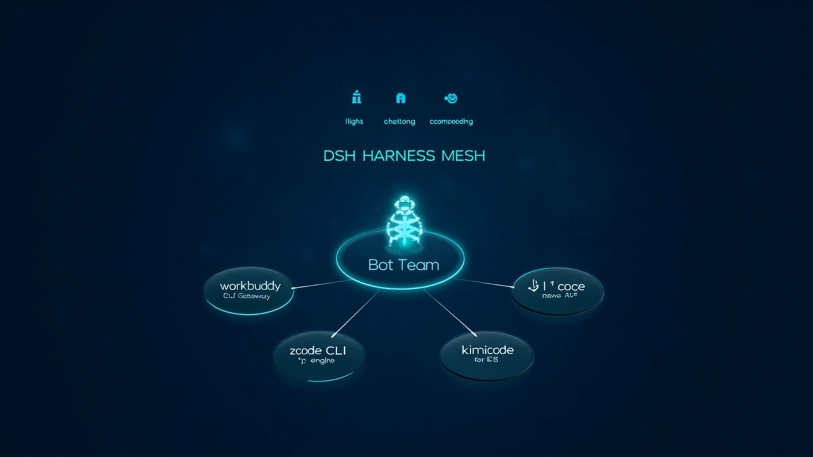
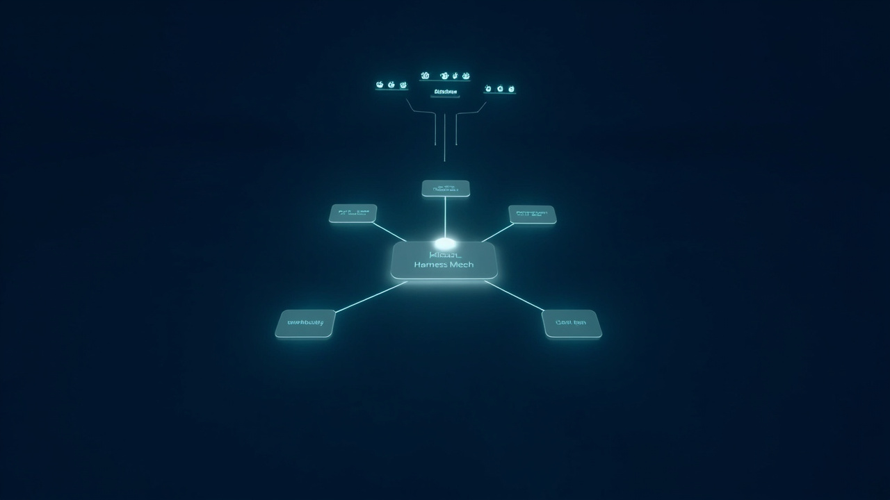

DSH Harness Mesh
English · 中文 · Bilingual viewer (click to switch)
Release date: 2026-10-18 · License: MIT · Components: DeepSeek Harness · DeepSeekBot

What is this?
DSH Harness Mesh — a multi-harness orchestration layer for DeepSeek Harness. One control plane dispatches real work across a fleet of AI coding agents (workbuddy / zcode / kimicode / opencode), and a persistent Bot Team (DeepSeekBot) drives them with native tools.
┌─────────────────────────────────────────────────┐ │ DSB Bot Team (persistent identities + memory) │ │ │ native harness_* tools (82 total) │ │ ┌──────▼───────────────────────────────────┐ │ │ │ Harness Mesh (plug protocol over ANN) │ │ │ └──┬─────────┬─────────┬─────────┬─────────┘ │ │ ▼ ▼ ▼ ▼ │ │ workbuddy zcode kimicode opencode │ │ (GUI GW) (CLI) (native (native │ │ ACP) ACP) │ └─────────────────────────────────────────────────┘
Highlights
1. Bots that actually delegate
Every DSB bot ships with 5 native harness tools — harness_list, harness_dispatch, harness_status, harness_result, harness_cancel. Ask a bot to "have zcode refactor this file" and it discovers the node, dispatches, polls, and reports back. Node configuration is a single source of truth (nodes.json), symlinked across instances — zero drift.
2. Four harness forms, one contract
The plug protocol (length-framed JSON-RPC + raw byte pipes) drives four completely different agent shapes behind one interface:
| Node | Form | Notes |
|---|
|---|---|---|
| workbuddy | GUI Gateway (REST bridge) | + UI control tools (10) |
|---|---|---|
| zcode | CLI-first, thin adapter | -p engine, auth-safe |
| kimicode | Native ACP CLI | zero adapter |
| opencode | Native ACP CLI | zero adapter |
3. Production hardening (this build)
harness_config, dispatch.model)Screenshots
| @ dispatch menu (type @, pick a node, go) | Harness console (dispatch + task list) |
|---|
|---|---|
|  |  |
|---|
| Bot dispatching to the mesh (request + 8-node report) | Bot mode (roster + live chat) |
|---|
|---|---|
|  |  |
|---|
Install
git clone https://github.com/BotHarness/DeepSeekBot.git BotHarness cd BotHarness # apply DreamX patches (see patches/ in the release bundle) pnpm install && pnpm build node scripts/dev-instance.mjs --home /tmp/botharness-demo --port 31967 \ --trusted-host <your-lan-ip> --no-client-diagnostics
Then open http://.
Verified
Credits
Built on DeepSeek Harness and BotHarness/DeepSeekBot. Patches MIT.
DSH Harness Mesh
English · 中文 · 双语查看页(点击切换)
发布日期: 2026-10-18 · 许可: MIT · 组件: DeepSeek Harness · DeepSeekBot

这是什么?
DSH Harness Mesh——DeepSeek Harness 上的多 harness 调度层。一个控制面把真实工作派发到一队 AI 编程 agent(workbuddy / zcode / kimicode / opencode),并由持久化的 Bot 团队(DeepSeekBot)用原生工具驱动它们。
┌─────────────────────────────────────────────────┐ │ DSB Bot 团队(持久身份 + 长期记忆) │ │ │ 原生 harness_* 工具(共 82 个) │ │ ┌──────▼───────────────────────────────────┐ │ │ │ Harness 网格(ANN 上的插头协议) │ │ │ └──┬─────────┬─────────┬─────────┬─────────┘ │ │ ▼ ▼ ▼ ▼ │ │ workbuddy zcode kimicode opencode │ │ (GUI 网关) (CLI) (原生 (原生 │ │ ACP) ACP) │ └─────────────────────────────────────────────────┘
亮点
1. 会真派活的 Bot
每个 DSB Bot 自带 5 个原生 harness 工具——harness_list、harness_dispatch、harness_status、harness_result、harness_cancel。对 Bot 说"让 zcode 重构这个文件",它会自己发现节点、派发、轮询、拿汇报。节点配置单一来源(nodes.json),跨实例软链——零漂移。
2. 四种形态,一套契约
插头协议(长度分帧 JSON-RPC + 原始字节管道)把四种完全不同的 agent 形态统一到一个接口后面:
| 节点 | 形态 | 备注 |
|---|
|---|---|---|
| workbuddy | GUI 网关(REST 桥) | + UI 操控工具(10 个) |
|---|---|---|
| zcode | CLI-first,薄适配器 | -p 引擎,鉴权安全 |
| kimicode | 原生 ACP CLI | 零适配器 |
| opencode | 原生 ACP CLI | 零适配器 |
3. 生产加固(本版)
harness_config、dispatch.model)界面截图
| @ 直达菜单(输 @ 选节点即派) | Harness 控制台(派发+任务列表) |
|---|
|---|---|
|  |  |
|---|
| Bot 调度 harness(请求+8 节点清单) | Bot 模式(名册+实时对话) |
|---|
|---|---|
|  |  |
|---|
安装
git clone https://github.com/BotHarness/DeepSeekBot.git BotHarness cd BotHarness # 打 DreamX 补丁(见发布包的 patches/) pnpm install && pnpm build node scripts/dev-instance.mjs --home /tmp/botharness-demo --port 31967 \ --trusted-host <你的局域网IP> --no-client-diagnostics
然后打开 http://<你的局域网IP>:31967/?token=。
验证
致谢
基于 DeepSeek Harness 与 BotHarness/DeepSeekBot。补丁部分 MIT。